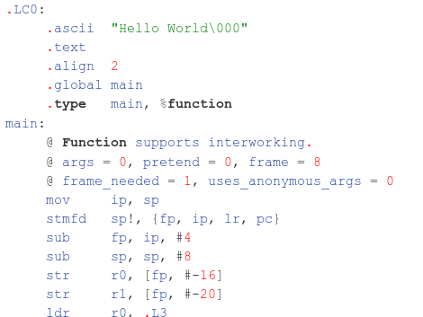

Solving Problems with Computers
Garrett McCullough
Senior Mobile Engineer @ Build.com
What are computers good at?

A small set of instructions

Really really fast
Two questions:
- Should we solve this problem? 🤔
- Can we solve this problem? 💪
Should we solve this problem? 🤔
Is there a big enough market? 💰💰
Is this a "trivial" problem?
Is this the correct problem?
Has someone else already solved this?

Now that we've decided that we should solve this problem...
Can we solve this problem? 💪
Computers are good at certain types of problems
Well Defined or Understood
Computationally Easy
Lots of Data

So we're ready, right?
Problems
Don't understand the problem
Limited Data
Ethics
Conclusion
- Think about what computers are good at
- Should we solve this problem? 🤔
- Can we solve this problem? 💪
- Can we foresee any problems with our solution?